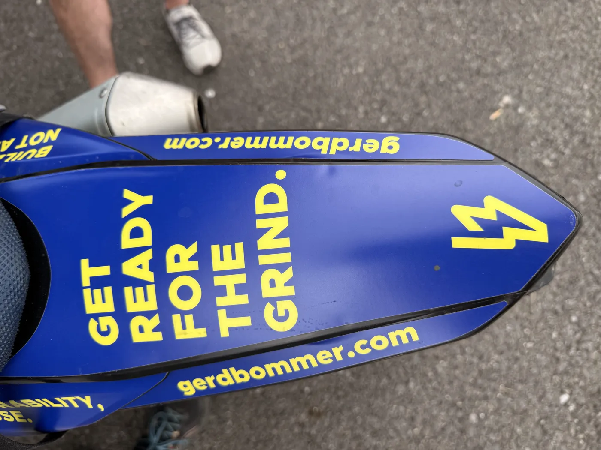
01Founder positioningBranding & visibility studio for courageous brands
Rise into visibility, authority and impact with a clear strategy, differentiated brand and thought leadership content
Who we work with
For courageous brands and ambitious founders who want to build a legacy and create a lasting impact
Selected work
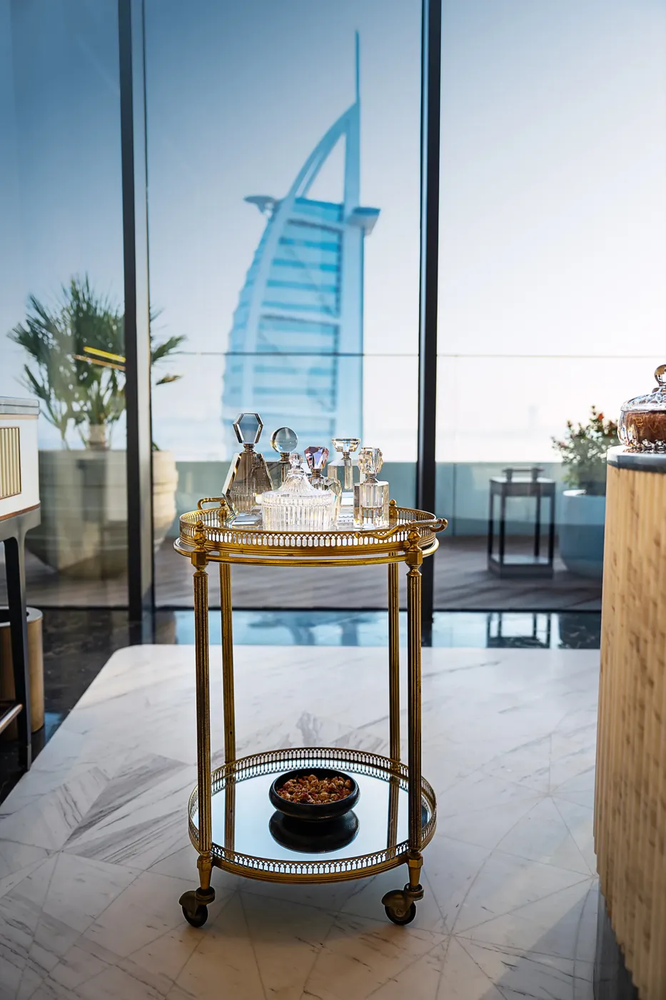
02Identity & websiteLuxury design studio for the finest hotels in the world
Learn more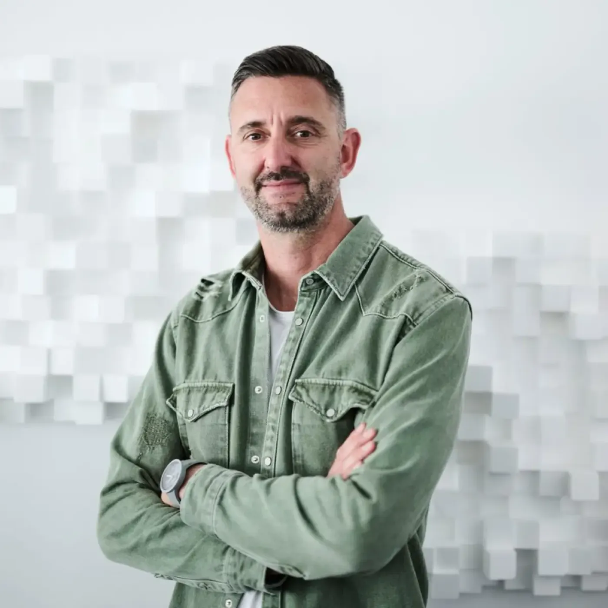
03Speaker platformSpeaker and Business Coach
Learn more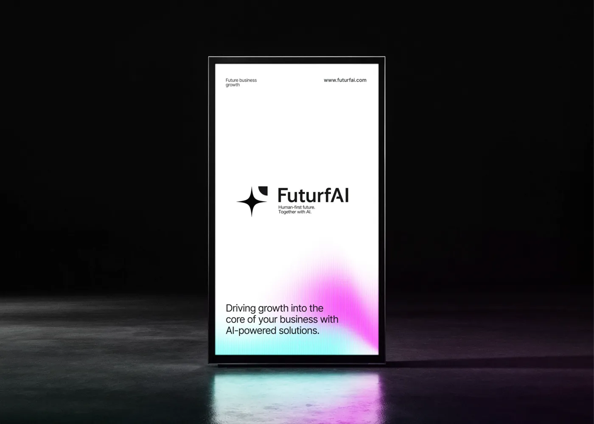
04Consultancy brandAI and Law Consultancy Brand
Learn more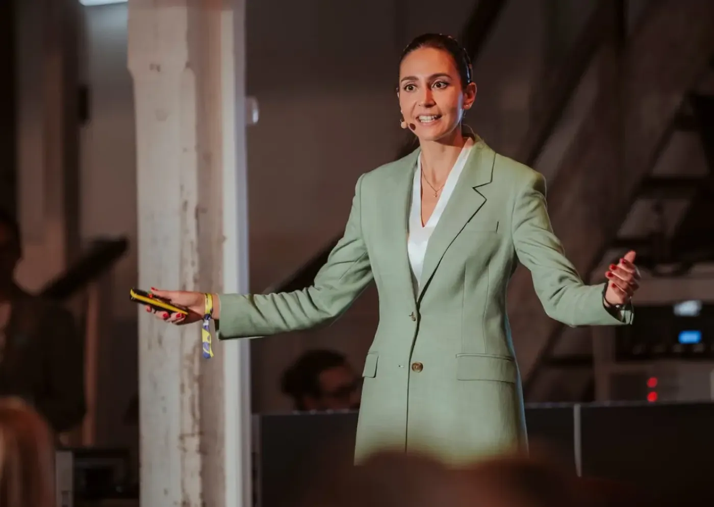
05Expert brandWealth Manager Expert Brand
Learn more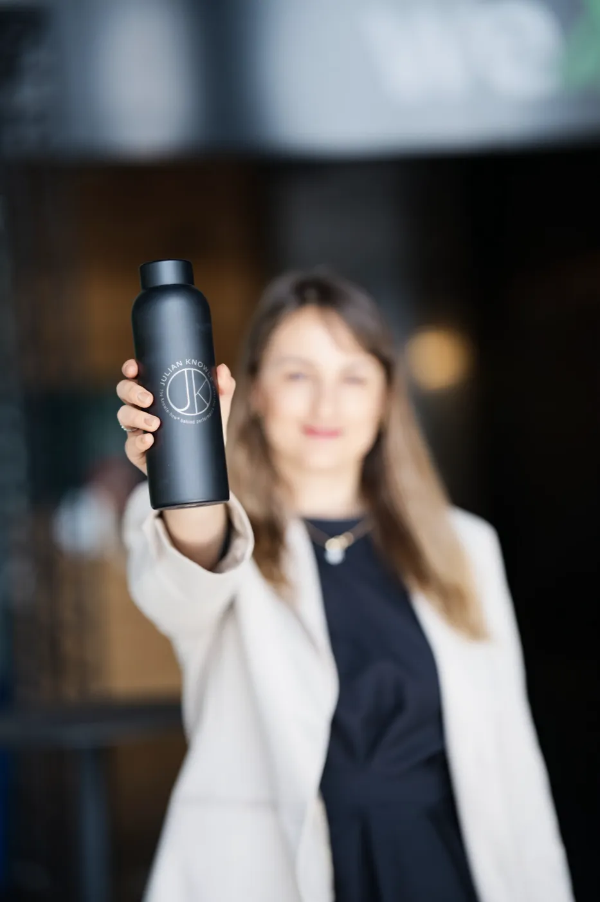
06Coach and speaker brandElite Tennis Coach and Speaker Brand
Learn morePrograms
We can grow your brand on four levels
We are based in Vienna, Austria and we operate across Europe.
Stage outcome
Be understood, and remembered.
Stage outcome
Become unmistakably you.
Stage outcome
Be seen in the right places.
Stage outcome
Be chosen for what comes next.
Trusted by founders, speakers and teams across Europe
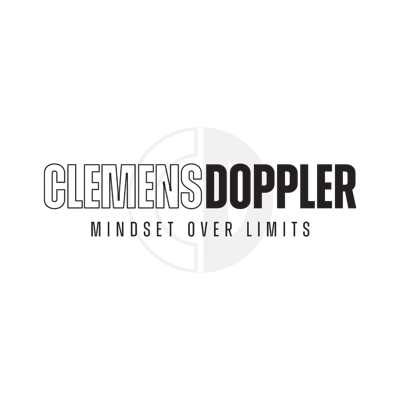
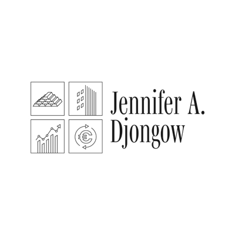
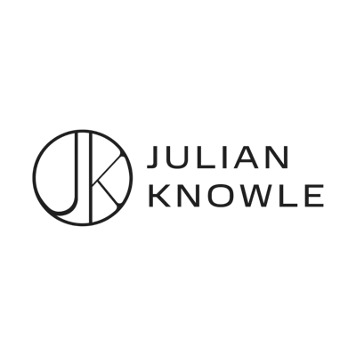
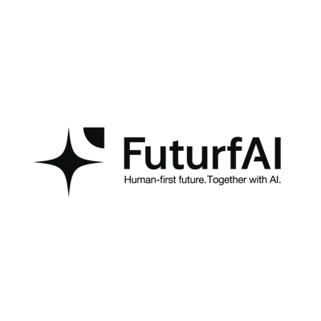
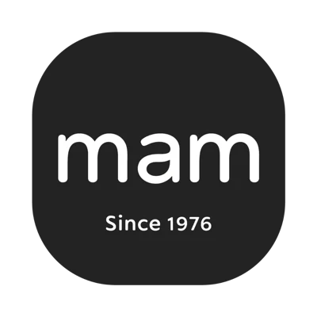
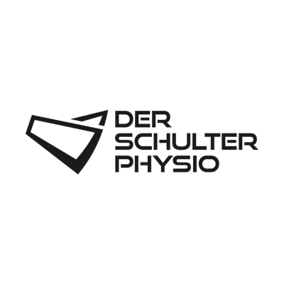
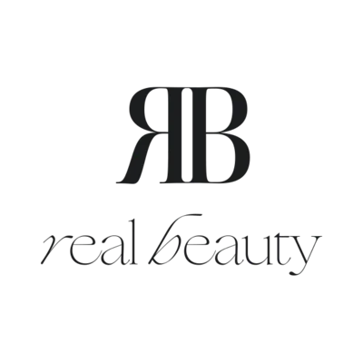

Founder
The studio exists to give voices to people who want to make a real impact.
A courageous brand refuses to conform. It belongs to someone who would rather be disliked than ignored. Who says the thing their industry is not ready to hear, and says it anyway. Who left the safe path, took the unpopular position, built what nobody asked for and who is building something meant to outlast them.
Most people carry a version of this inside them and never let it out, because they are afraid of repelling somebody. Courage is staying true to what you believe while you are still scared.
Led by Anzhelika and delivered by an interdisciplinary team, Rysing Studio translates a founder's courage and ambition into a differentiated, visible brand.
Learn more35+personal brands built
350+students taught
3000+content pieces published
50k+followers and subscribers over all platforms
The disciplines behind the work

Abdessamad Bendada
Web development, SEO, and everything web-side

Kritina
[ Discipline ]

Marc
[ Discipline ]
In their words
49 five-star reviews and a HIPE Award for outstanding service and customer satisfaction. Here's what founders say after working with us.
Certified 2025HIPE AwardOutstanding service
“Within three months my LinkedIn went from invisible to inbound. They rebuilt my positioning and the leads followed.”
“They turned my scattered ideas into a clear brand and a keynote I'm genuinely proud to walk on stage with.”
“The content system they built runs without me. My audience grew while I stayed focused on the business.”
“Finally a brand that actually sounds like me, and converts. Best investment I've made this year.”
“From messy to magnetic. Our website and identity finally match the level of the work we do.”
“Professional, fast and genuinely strategic. The five stars are not an exaggeration.”
For keynote speakers
We bring company founders into the spotlight
Build your speaker brand and rise into thought leadership.
Learn more
Newsletter — Sunday Fudge
Get free access to my business and marketing mini-courses
Join 2,000 founders and experts reading Sunday Fudge and learn how to acquire clients, build your online business and grow your following on LinkedIn and Instagram.
- Sharp perspective
- Useful prompts
- Sunday delivery
Sunday editionRysing Studio
Fudgefor
founders.
People branding.
Without the fluff.
Without the fluff.
Ready when you are